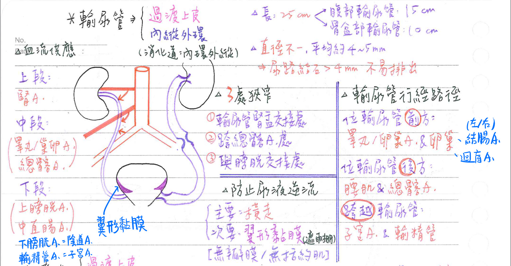
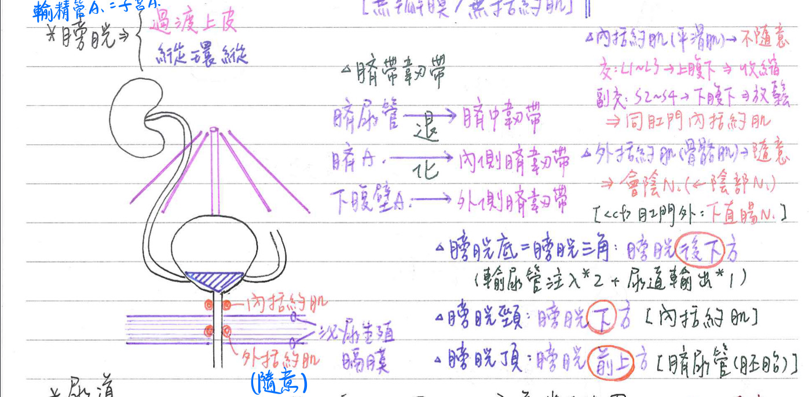
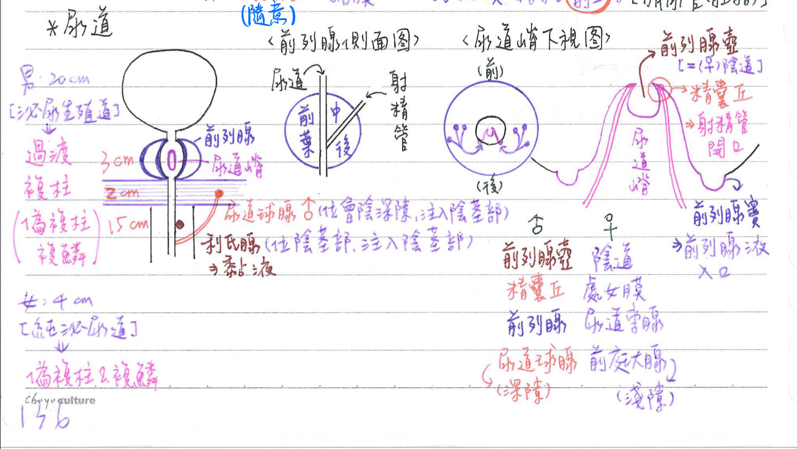

🚰 泌尿系統-輸尿管、膀胱、尿道
輸尿管(ureter)
輸尿管-一般性質
- 長約25cm，左側較長(因左腎較高)
- 腹部輸尿管(abdominal ureter)：15cm
- 骨盆部輸尿管(pelvic ureter)：10cm
- 直徑不一，約4~5mm
- [重點]尿路結石>4mm ⇒ 比較不容易排出；結石<4mm ⇒ 90%可排出
- [重點]三狹窄處：
- 上：輸尿管-腎盂交接處(UPJ)
- 中：跨上總髂A/V處
- =經薦骼關節(sarcoiliac j.)進入真骨盆處=經骨盆緣處
- 下：輸尿管-膀胱交接處(UBJ)
輸尿管-三層結構
- 內-黏膜層：過渡上皮
- 中-肌肉層(平滑肌)：內縱外環
- 蠕動1〜5次/分
💡<cf>腸胃道平滑肌：內環外縱
- 外-纖維層：前方覆蓋壁層腹膜
- 輸尿管屬於後腹膜器官
[重點]防止尿液由膀胱逆流回輸尿管方式
- 主要：輸尿管由膀胱的後下方以横走的方式進入膀胱
→當膀胱逼尿肌收縮，可壓迫並封閉其往輸尿管之開口 - 次要：膀胱之翼形黏膜的遮掩
- 其間無瓣膜，亦無括約肌

輸尿管-血液供應
- 上段：腎A
- 中段：睪丸/卵巢A、總髂A
- 下段：
- 上膀胱A、下膀胱A(男)=陰道A(女)
- 中直腸A、輸精管A(男)=子宮A(女)
輸尿管-行經路徑
- 位於輸尿管後方構造：腰肌(psoas m.)、總髂A
- 位於輸尿管前方構造：睪丸/卵巢A、右&左結腸A、迴腸盲腸A、卵巢等
- 跨越輸尿管構造：子宮A(女)、輸精管(男)等
膀胱(urinary bladder)：後腹膜器官
膀胱-四層結構
- 最內層-黏膜層：★[110-2]過渡/移形上皮
- 黏膜下層
- 肌肉層(平滑肌)=迫尿肌/逼尿肌(detrusor)
- 排列：[縱環縱]
- 最外層-漿膜層：壁層腹膜；★[106-1]僅覆蓋上表面
膀胱底、膀胱頸、膀胱頂
- 膀胱底(base)=膀胱三角(trigone)
- 位於膀胱後壁下方
- 外上角=輸尿管注入 x2
- 下端=尿道輸出 x1
- 膀胱頸(neck)：位於膀胱最下方
- 膀胱頂(apex)：位於膀胱前上方
- 臍尿管(urachus)：胚胎時期連接膀胱頂&肚臍
尿道括約肌
- 內括約肌(平滑肌；不隨意肌)：膀胱環肌的特化，位於膀胱頸
- 外括約肌(骨骼肌；隨意肌)：位於泌尿生殖膈膜
- 尿道外括約肌&深橫會陰肌：共同組成泌尿生殖膜(UGD)
臍帶韌帶/皺褶
- 臍尿管(uachus)：退化成臍正中韌帶(median umbilical fold) x1
- 臍動脈：退化成內側臍韌帶(皺褶)(medial umbilical fold) x2
- 下腹壁動脈/上腹下A.(inferior epigastric a.)：形成外側臍韌帶(皺褶) x2

排尿控制
- 自主神經：不隨意
- 副交感：S2~4 →骨盆內臟N(節前) →下腹下神經節(inf. hypogastric)[幫助排尿]
- 迫尿肌：收縮(興奮)
- 內括約肌：舒張(抑制)
- 交感：L1~L2→腹下N(節後)→上腹下神經節(sup.hypogastric)[抑制排尿]
- 迫尿肌：舒張(抑制)
- 內括約肌：收縮(興奮)
- 體運動神經：隨意
- 會陰N(perineal n)：支配外括約肌
- 會陰N為陰部N(pudendal n)分枝
- 副交感：S2~4 →骨盆內臟N(節前) →下腹下神經節(inf. hypogastric)[幫助排尿]
膀胱-輸入(感覺)神經
- 骨盆N(pelvic n)：膀胱感覺
- 陰部N(pudendal n)：尿道感覺
膀胱-血管供應
- 上膀胱A←臍A←內髂A
- 下膀胱A(=陰道A)←內髂A
尿道(urethra)：有4種上皮
男性尿道：分成三部份
- 前列腺部(prostatic urethra；3cm)：
- 穿越前列腺，分隔前列腺之中葉與前葉
- 為男性尿道最寬處
- 為生殖道(射精管=分隔前列腺之中葉與後葉)注入處
- 內襯過渡上皮
- 具後縱嵴[又稱尿道嵴(urethral crest)]，其相關構造：
- 精囊丘(=精阜，seminal colliculus)：位於尿道嵴之頂，射精管(左右各一)開口處
- 前列腺壺(prostatic utricle)：位於精囊丘之凹陷(=女性陰道)
- 前列腺竇(prostatic sinus)：位於尿道兩旁之溝槽，前列腺小管開口處
- 膜部(membranous urethra；2cm)：
- 穿越泌尿生殖隔膜部(urogenital diaphragm)
- 為男性尿道最短處
- 兩旁具尿道外活約肌
- 內襯複層柱狀上皮
- 陰莖部(penile urethra；15cm)=海綿部(spongy urcthra)：
- 穿越陰莖(陰莖球、尿道海綿體、龜頭等構造)
- ★[110-2]為男性尿道最長處
- 內襯★[110-2]偽複層柱狀、複層鱗狀上皮
- 跨腿損傷(straddle injury)：傷及位於陰莖球之陰莖部尿道，為尿道損傷最常見處

相關腺體
- 利氏腺(Littre gland)
- 尿道上皮之特化，分泌黏液(mucous)
- 主要位於/注入尿道陰莖部
- 尿道球腺(bulbourethral gland)[男性]
- 位於泌尿生殖膈膜之深橫會陰肌中(=會陰深隙)
- 注入尿道陰莖部；尿道球腺液佔精液之5%
- 相當於前庭大腺=巴氏腺(Bartholin gland)[女性]
- 位於會陰淺隙，注入陰道前庭
女性尿道：2種上皮
- 偽複層柱狀、複層鱗狀上皮
- 中段兩旁具尿道外括約肌
男、女性尿道之比較
| 總長度 | 組織分層 | |||
|---|---|---|---|---|
| 男 | 20cm | 2層(黏膜、海綿組織) | 泌尿生殖道 | 尿道球腺(會陰深隙) |
| 女 | 4cm | 3層(黏膜、海綿組織、肌肉) | 泌尿道 | 前庭大腺/巴氏腺(會陰淺隙) |